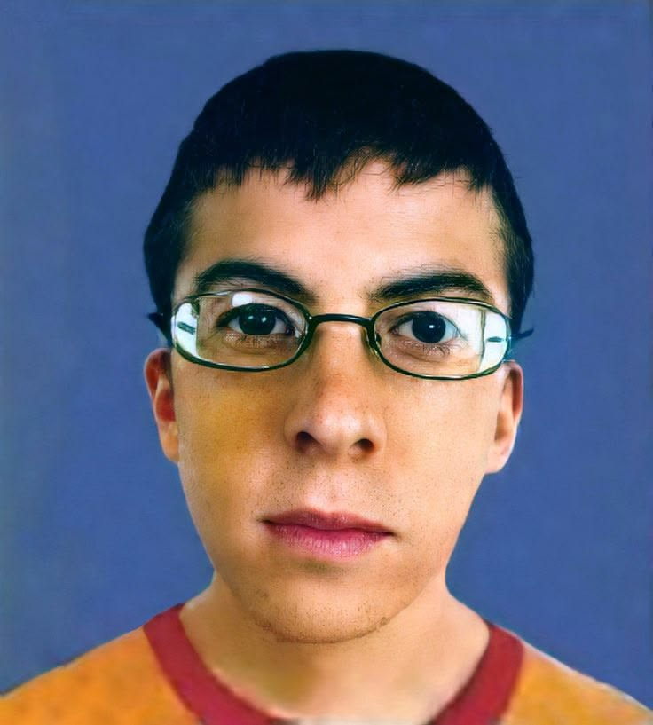

HOJA DE VIDA Nombre Completo:Abelardo Gabriel de la Espriella Otero Género:Masculino Edad:17 Años BiografíaHola. Tengo 17 años y, la verdad, siempre he sido de los que necesitan saber cómo funcionan las cosas por dentro. En mi tiempo libre me la paso investigando sobre mecánica de motos, analizando estrategias en videojuegos. Pero siempre me preguntaba qué había detrás de todo eso, qué lógica hacía que los sistemas funcionaran. Por eso decidí estudiar ADSO. Me di cuenta de que programar no es solo tirar código porque sí; es básicamente lo mismo que armar un motor o resolver un rompecabezas complejo, pero con la libertad de crear herramientas desde cero. Encontré en la tecnología el lugar perfecto para juntar la lógica con la creatividad, y apenas estoy empezando. |
HOBBIES
LENGUAJES DE PROGRAMACIÓN
CONCLUSIÓN DE ADSODel programa de ADSO puedo decir que es bastante interesante, ya que abarca demasiadas cosas desde el análisis de información hasta el desarrollo de aplicaciones, personalmente creo que, aunque es difícil es muy emocionante aprender al respecto y saber manejar los programas y lenguajes que esta disciplina requiere para el desarrollo de soluciones tecnológicas. Además, ayuda a mejorar la lógica y ofrece una gran proyección laboral, ya que el sector tecnológico siempre está buscando personas capaces de crear e innovar. COMPROMISOMe comprometo a mantener viva la curiosidad que me trajo hasta aquí, a ver cada error en la programación no como un fallo, sino como una pieza más del rompecabezas que debo resolver. Voy a esforzarme todos los días para convertirme en un gran programador, capaz de construir soluciones reales, entender cada sistema a fondo y llegar tan lejos como los motores que tanto me apasionan. Sé que el camino es largo, pero estoy listo para acelerar a fondo y no mirar atrás. |